Weave-VLA
3D Relational Grounding for Vision-Language-Action Models
1 The Hong Kong University of Science and Technology
2 Hong Kong Polytechnic University · 3 Xi’an University of Electronic Science and Technology · 4 Zhejiang University
- LIBERO average
- 98.3%
- StarVLA-GR00T + Weave-VLA
- LIBERO-Plus success
- 87.8%
- π0.5 + Weave-VLA
- CALVIN D→D
- 3.997 / 5
- Mean subtasks · π0.5 + Weave-VLA
ABSTRACT
Grounding actions in 3D relationships
Robot manipulation depends on spatial relationships among objects. A policy needs to know which object to move, where it should go, and how those positions relate in three dimensions.
Weave-VLA builds a task-conditioned 3D scene graph from visual observations and the language instruction. It encodes objects and their relationships into a compact set of graph tokens and integrates them into a vision-language-action policy. Experiments on LIBERO, LIBERO-Plus, CALVIN, and a physical robot evaluate how this representation affects task success and robustness.
METHOD
From observations to action
Weave-VLA adds an explicit representation of objects and their spatial relations to the policy’s visual and language context.
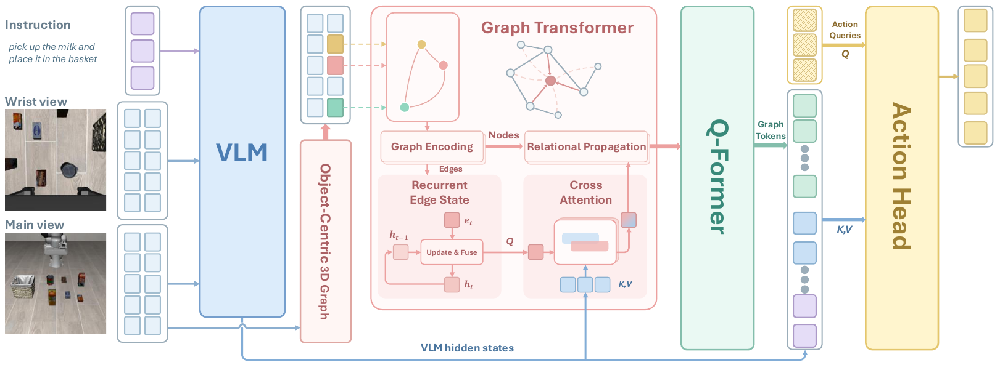
-

Build the scene graph
Build a 3D graph of task objects, the gripper, and nearby reference objects.
-

Encode relationships
Update each selected object pair’s recurrent edge state with valid 3D observations, then summarize the graph into compact relational tokens.
-

Condition the policy
Combine graph tokens with the visual and language context so the VLA backbone can use explicit spatial structure when predicting actions.
SIMULATION BENCHMARKS
Simulation results
Full results on LIBERO, LIBERO-Plus, and CALVIN, including published comparisons and ablations.
LIBERO
Success rates (%) across four suites, with 500 rollouts per suite. Long denotes LIBERO-10. Average is the four-suite mean.
Scroll horizontally to see all columns.
| Method | Spatial | Object | Goal | Long | Average |
|---|---|---|---|---|---|
| OpenVLA (Kim et al., 2024) | 84.7 | 88.4 | 79.2 | 53.7 | 76.5 |
| OpenVLA-OFT (Kim et al., 2025) | 97.6 | 98.4 | 97.9 | 94.5 | 97.1 |
| π0 (Black et al., 2025b) | 96.8 | 98.8 | 95.8 | 85.2 | 94.2 |
| DreamVLA (Zhang et al., 2025) | 97.5 | 94.0 | 89.5 | 89.5 | 92.6 |
| GR00T-N1 (Bjorck et al., 2025) | 94.4 | 97.6 | 93.0 | 90.6 | 93.9 |
| MemoryVLA (Shi et al., 2026) | 98.4 | 98.4 | 96.4 | 93.4 | 96.7 |
| VLA-JEPA (Sun et al., 2026) | 96.2 | 99.6 | 97.2 | 95.8 | 97.2 |
| DeepThinkVLA (Yin et al., 2025) | 96.6 | 99.0 | 96.4 | 96.2 | 97.0 |
| StarVLA-GR00T (Community, 2026) | 97.8 | 98.8 | 97.4 | 92.0 | 96.5 |
| π0.5 (Black et al., 2025a) | 98.8 | 98.2 | 98.0 | 92.4 | 96.9 |
| Weave-VLA (StarVLA) | 98.8 (+1.0) | 99.6 (+0.8) | 98.8 (+1.4) | 96.0 (+4.0) | 98.3 (+1.8) |
| Weave-VLA (π0.5) | 99.0 (+0.2) | 99.2 (+1.0) | 98.2 (+0.2) | 96.4 (+4.0) | 98.2 (+1.3) |
Parenthesized values show percentage-point gains over the corresponding backbone.
LIBERO-Plus
Zero-shot success rates (%) across seven perturbation categories using LIBERO-trained models. Overall pools all 10,030 tasks.
Scroll horizontally to see all columns.
| Method | Camera | Robot | Language | Light | Background | Noise | Layout | Overall |
|---|---|---|---|---|---|---|---|---|
| Fast-WAM (Yuan et al., 2026) | 16.4 | 44.5 | 68.9 | 78.2 | 53.7 | 37.7 | 60.7 | 51.5 |
| π0 (Black et al., 2025b) | 13.8 | 6.0 | 58.8 | 85.0 | 81.4 | 79.0 | 68.9 | 53.6 |
| VLA-JEPA (Sun et al., 2026) | 63.3 | 67.1 | 85.4 | 95.6 | 93.6 | 66.3 | 85.1 | 79.5 |
| OpenVLA-OFT (Kim et al., 2025) | 56.4 | 31.9 | 79.5 | 88.7 | 93.3 | 75.8 | 74.2 | 69.6 |
| Being-H0.7 (Luo et al., 2026) | 82.0 | 59.0 | 82.8 | 97.8 | 90.0 | 93.5 | 88.5 | 82.1 |
| Cosmos-Policy (Kim et al., 2026) | 75.8 | 63.3 | 81.7 | 96.5 | 88.9 | 92.7 | 82.2 | 82.2 |
| ImageWAM (Zhang et al., 2026) | 80.8 | 50.3 | 91.4 | 98.1 | 85.5 | 93.8 | 80.5 | 83.1 |
| ABot-M0.5 (Chen et al., 2026) | 70.5 | 87.4 | 88.6 | 94.0 | 89.7 | 75.5 | 85.2 | 83.4 |
| StarVLA-GR00T (Community, 2026) | 49.2 | 62.3 | 84.3 | 93.2 | 92.7 | 74.2 | 79.5 | 74.9 |
| π0.5 (Black et al., 2025a) | 75.4 | 77.5 | 85.6 | 96.9 | 94.6 | 89.7 | 85.7 | 85.7 |
| Weave-VLA (StarVLA) | 64.6 (+15.4) | 69.2 (+6.9) | 93.2 (+8.9) | 94.8 (+1.6) | 95.3 (+2.6) | 83.6 (+9.4) | 81.2 (+1.7) | 82.0 (+7.1) |
| Weave-VLA (π0.5) | 79.5 (+4.1) | 85.7 (+8.2) | 83.1 (−2.5) | 97.9 (+1.0) | 97.4 (+2.8) | 89.3 (−0.4) | 87.7 (+2.0) | 87.8 (+2.1) |
The StarVLA-GR00T results are reproduced by the authors. Parenthesized values show percentage-point changes relative to the corresponding backbone.
CALVIN D→D
Evaluation on 1,000 five-instruction sequences. Columns 1–5 give the success rate (%) for completing at least that many consecutive subtasks. Average length counts completed subtasks.
Scroll horizontally to see all columns.
| Method | 1 | 2 | 3 | 4 | 5 | Average length |
|---|---|---|---|---|---|---|
| RoboFlamingo (Li et al., 2024) | 86.0 | 71.4 | 58.5 | 46.0 | 34.9 | 2.968 |
| MDT-V (Reuss et al., 2024) | 93.9 | 83.8 | 73.5 | 63.9 | 54.9 | 3.700 |
| RoboUniView (Liu et al., 2024) | 96.2 | 88.8 | 77.6 | 66.6 | 56.3 | 3.855 |
| StarVLA-GR00T (Community, 2026) | 89.8 | 79.9 | 71.8 | 64.9 | 58.1 | 3.645 |
| π0.5 (Black et al., 2025a) | 92.5 | 84.0 | 76.6 | 71.0 | 64.4 | 3.885 |
| Weave-VLA (StarVLA) | 92.6 (+2.8) | 84.4 (+4.5) | 77.9 (+6.1) | 71.4 (+6.5) | 64.7 (+6.6) | 3.910 (+0.265) |
| Weave-VLA (π0.5) | 92.7 (+0.2) | 84.4 (+0.4) | 78.9 (+2.3) | 74.5 (+3.5) | 69.2 (+4.8) | 3.997 (+0.112) |
Parenthesized values show changes relative to the corresponding backbone, in percentage points for success rates and in subtasks for average length.
Ablations
Weave-VLA (StarVLA) ablations on LIBERO and LIBERO-Plus. All values are success rates (%).
Scroll horizontally to see all columns.
| Variant | Spatial | Object | Goal | Long | Average | Plus |
|---|---|---|---|---|---|---|
| StarVLA | 97.8 | 98.8 | 97.4 | 92.0 | 96.5 | 74.9 |
| Weave-VLA (Full) | 98.8 | 99.6 | 98.8 | 96.0 | 98.3 | 82.0 |
| Without geometry loss (ℒgeo) | 98.6 | 99.8 | 98.4 | 94.0 | 97.7 | 80.4 |
| Without edge memory | 98.4 | 98.6 | 98.4 | 95.6 | 97.8 | 80.7 |
| With full connectivity | 98.6 | 99.0 | 96.4 | 95.8 | 97.5 | 79.8 |
Average is the mean across the four LIBERO suites. Plus is the pooled LIBERO-Plus success rate.
REAL-WORLD DEMOS
Three tasks, four conditions
Watch the robot clean a table, place pens in cups, and stack bowls under the standard setup and three visual perturbations.
Recording condition
Place pens in cups
NormalStack bowls
NormalView the robot setup and task sequences
Robot workspace
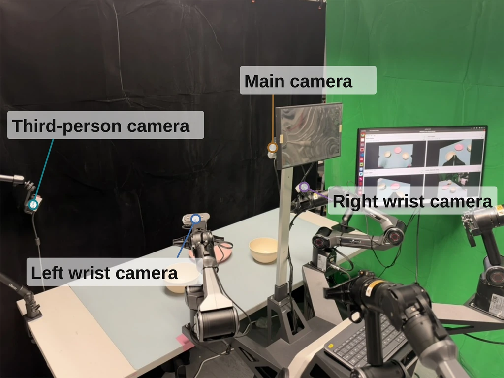
Synchronized camera views
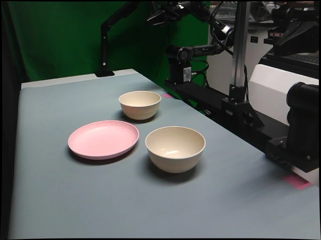
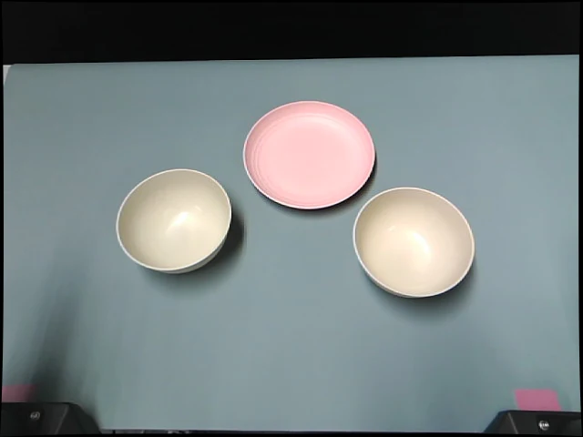
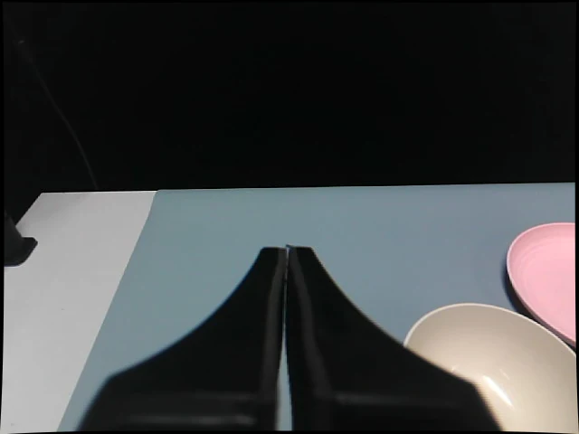
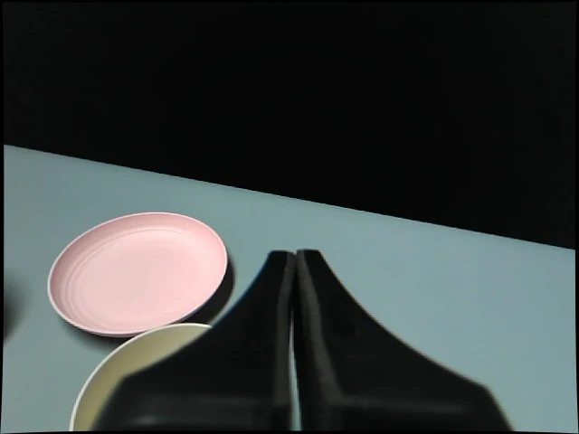
Task sequences
Stack the bowls on the plate
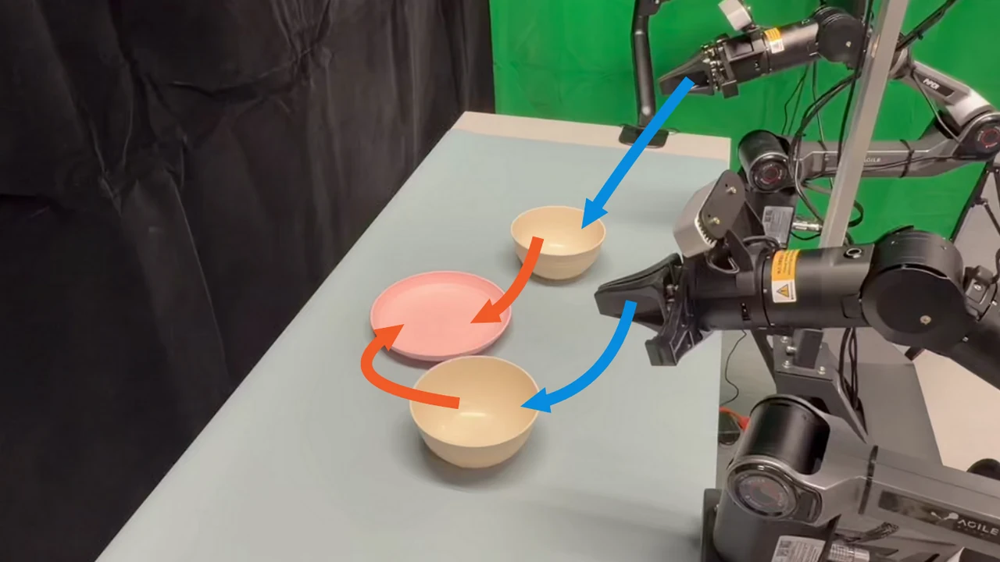
Grasp bowls 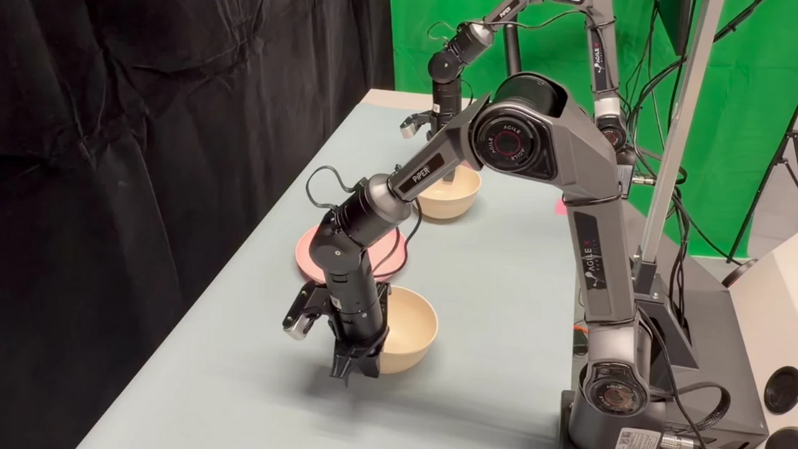
Lift bowls 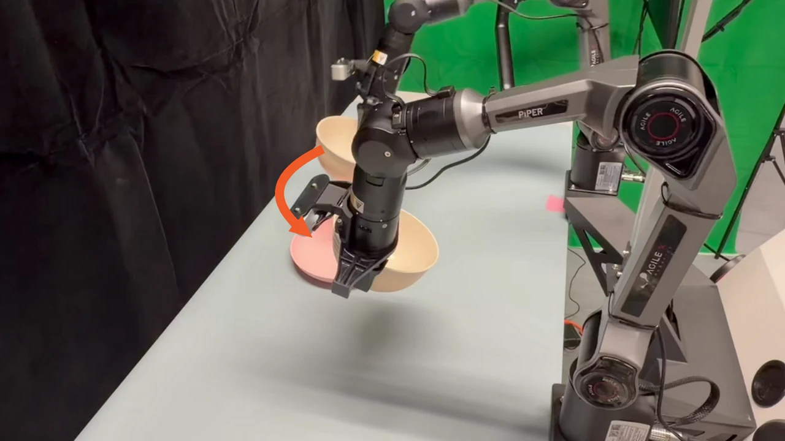
Place first bowl 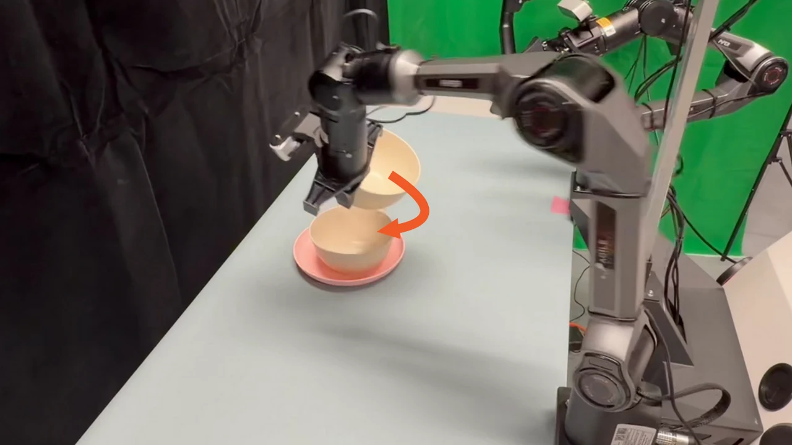
Place second bowl
Place the pens in the cups
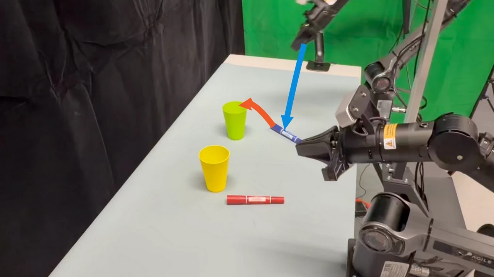
Pick first pen 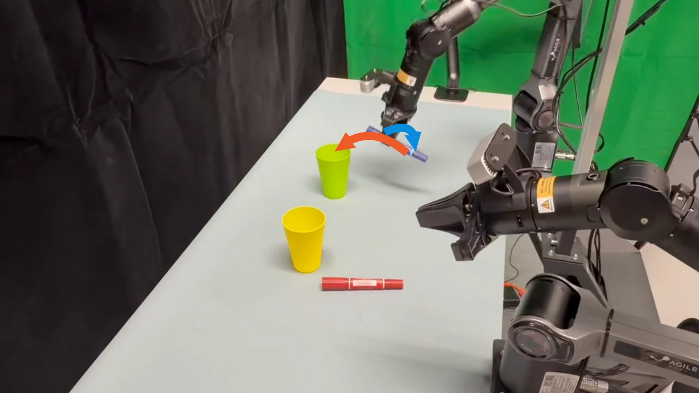
Place first pen 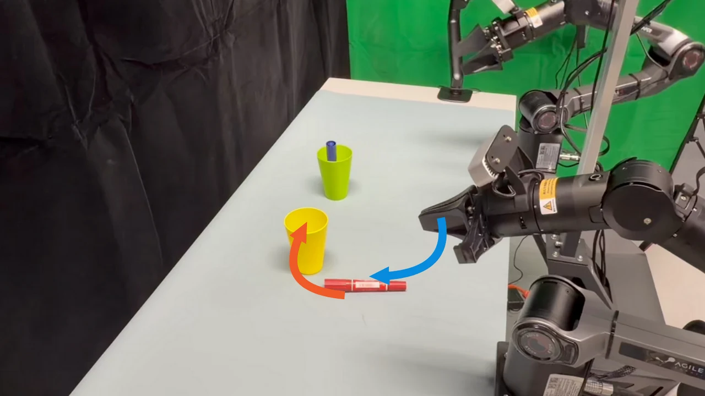
Pick second pen 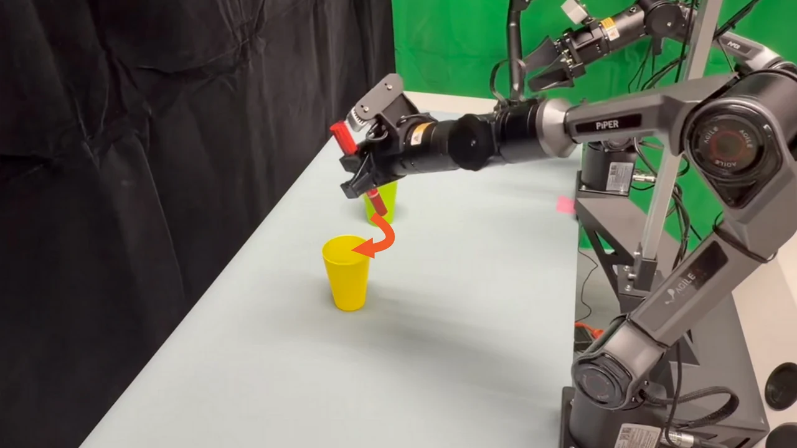
Place second pen
Clean the table
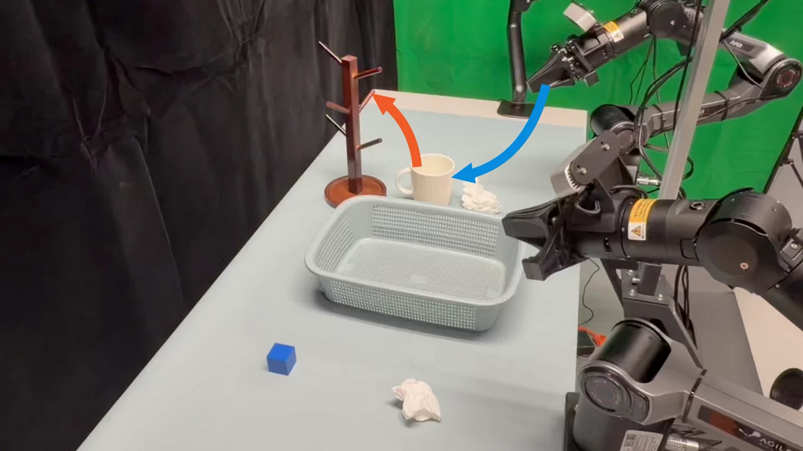
Hang mug 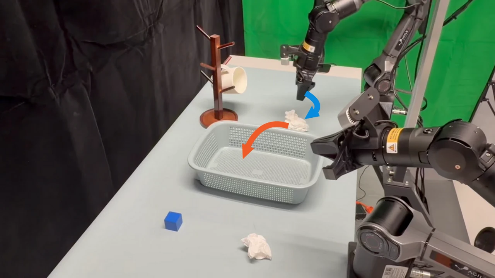
Place first paper ball 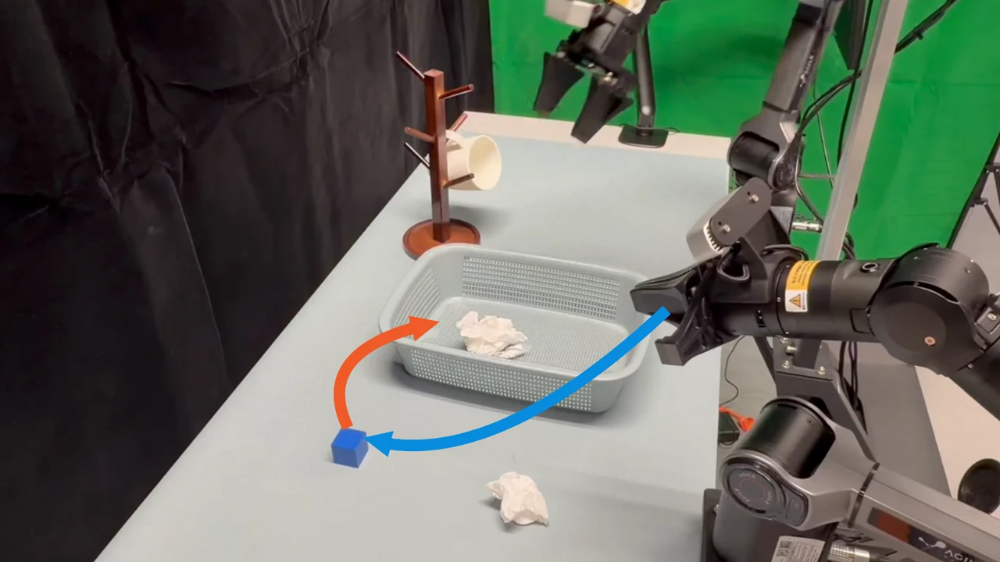
Place block 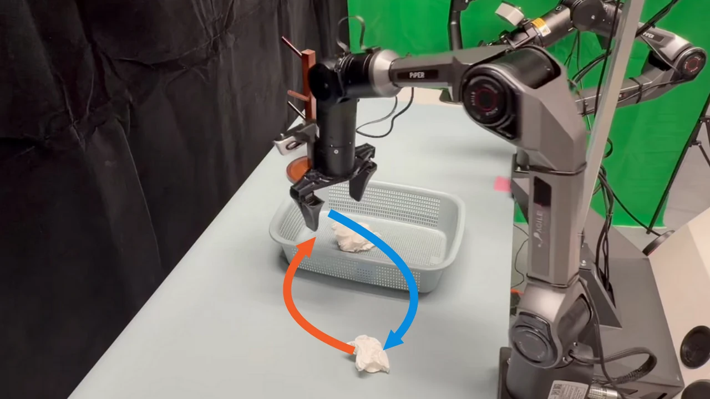
Place second paper ball
CITATION
BibTeX
BibTeX
@misc{wang2026weavevla,
title = {{Weave-VLA}: {3D} Relational Grounding for
Vision-Language-Action Models},
author = {Wang, Zien and Pan, Yuhao and Fan, Yunfeng and
Cheng, Nan and Xia, Xin and Xu, Wenchao},
year = {2026}
}